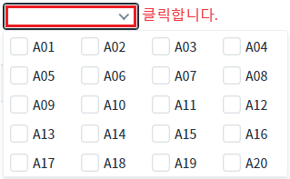
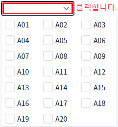
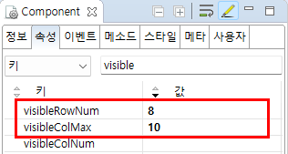

CheckCombobox의 'visibleColMax' 속성과 'visibleRowNum' 속성을 사용하여, 목록의 열 개수를 보여질 행 개수의 설정에 따라 동적으로 구성되도록 설정한 예제입니다.
20개의 항목을 보여질 행 개수를 5개, 최대 열 개수를 10으로 지정한 상태
20개의 항목을 보여질 행 개수를 10개, 최대 열 개수를 8으로 지정한 상태
목록에 구성된 항목은 동일합니다. 항목은 총 20개로 구성되어있습니다. 설정 값에 따라 출력된 목록을 비교합니다. 출력된 열 개수에 대한 산정 방법은 아래의 [구현 예시]에 설명되어 있습니다.
예제 영역 'visibleColMax="10" visibleRowNum="5"'에 구성된 CheckCombobox에서 테스트합니다. 목록에 항목이 4개의 열과 5개의 행으로 구성됩니다..
Image 1.브라우저(Chrome) 실행 예시 - 보여질 행 개수를 5개, 최대 열 개수를 10으로 지정

예제 영역 'visibleColMax="10" visibleRowNum="8"'에 구성된 CheckCombobox에서 테스트합니다. 목록에 항목이 3개의 열과 7개의 행으로 구성됩니다..
Image 2.브라우저(Chrome) 실행 예시 - 보여질 행 개수를 8개, 최대 열 개수를 10으로 지정

열의 개수 산정식
Math.min(visibleColMax, Math.ceil(itemCount / visibleRowNum))
설정 예시 "visibleRowNum=5, visibleColMax=8"
항목의 총 수가 40(visibleRowNum*visibleColMax)개보다 적은 경우에는 항목이 5배수 단위로 늘어날 때마다 열이 1개씩 추가됩니다.
항목의 총 수가 4개이면 4*1, 12개이면 5*3, 24개이면 5*5, 30개이면 5*6 직사각형 형태로 출력됩니다.
항목의 총 수가 40(visibleRowNum*visibleColMax)개보다 큰 경우에는 세로 스크롤이 생긴다. 목록은 5*8 직사각형 형태로 출력됩니다.
컴포넌트의 속성을 정의합니다.
[필수] visibleRowNum="5"
목록 확장 시 표현 될 항목의 개수. 총 건수가 지정된 값보다 많은 경우 스크롤이 생성됩니다.
(값을 '1'로 설정하는 것은 권장하지 않습니다.)
[필수] visibleColMax="10"
열 개수가 계산될 때 최대 열의 개수.
visibleColNum 설정이 있을 경우 이 설정은 무시됩니다.
Image 3.웹스퀘어 스튜디오의 Component View 예시

Example 1.Source
<!-- CheckCombobox의 소스 본문 예시 --> <xf:checkcombobox visibleColMax="10" visibleRowNum="5"> <!-- 중략 --> </xf:checkcombobox>
visibleColMax
visibleRowNum
visibleColNum